权限扫描仪表盘
1.1 安全管理员列表和权限安全隐患情况
安全管理员列表
| 用户名 | 是否超级用户 | 是否具备创建角色权限 | 是否系统管理员 | 是否审计管理员 |
|---|

通过三权分立角色模型实现权限的分派，且三个管理员角色独立行使权限，相互制约制衡。使得整个系统的权限不会因为权限集中而引入安全的风险。
1.2 系统管理员列表和权限安全隐患情况
系统管理员列表
| 用户名 | 是否超级用户 | 是否具备创建角色权限 | 是否系统管理员 | 是否审计管理员 |
|---|

通过三权分立角色模型实现权限的分派，且三个管理员角色独立行使权限，相互制约制衡。使得整个系统的权限不会因为权限集中而引入安全的风险。
1.3 审计管理员列表和权限安全隐患情况
审计管理员列表
| 用户名 | 是否超级用户 | 是否具备创建角色权限 | 是否系统管理员 | 是否审计管理员 |
|---|

通过三权分立角色模型实现权限的分派，且三个管理员角色独立行使权限，相互制约制衡。使得整个系统的权限不会因为权限集中而引入安全的风险。
2.1 各用户对各表权限
| 角色名称 | 表格名称 | 权限 |
|---|
2.2 各用户对各数据库权限
2.3 所有公开的表格
3 用户角色权限策略
所有用户信息表
根据表格分析：
（1）管理员可以有多个，但是安全管理员只能有一个
如表格上所示，超级管理只有一个是正确的，符合权限要求。
（2）禁止新建以“gs_role_”开头的用户/角色，也禁止将已有的用户/角色重命名为以“gs_role_”开头
如表格上所示，没有以“gs_role_”开头的用户/角色，符合权限要求。
（3）用户帐户创建原则
非三权分立下，openGauss用户帐户只能由系统管理员rolsystemadmin或拥有CREATEROLE属性的安全管理员创建和删除。
三权分立时，用户帐户只能由初始用户omm和安全管理员rolcreaterole创建。